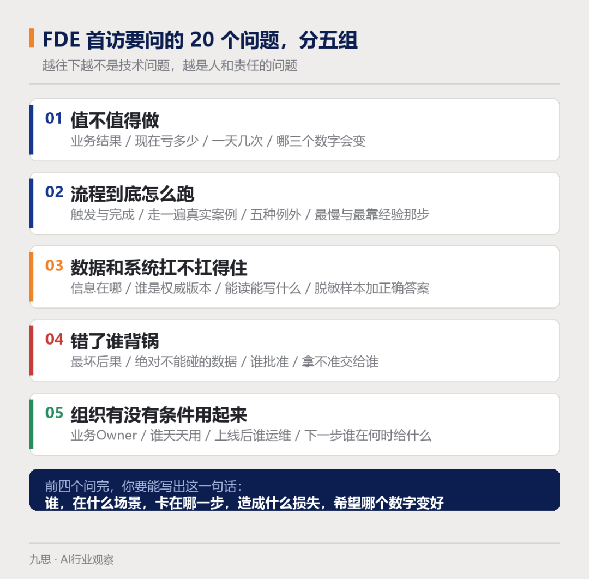
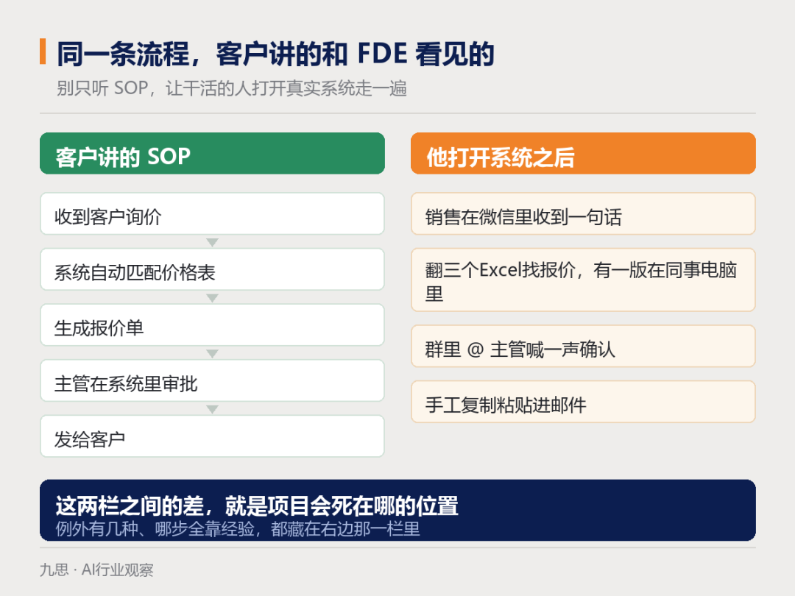
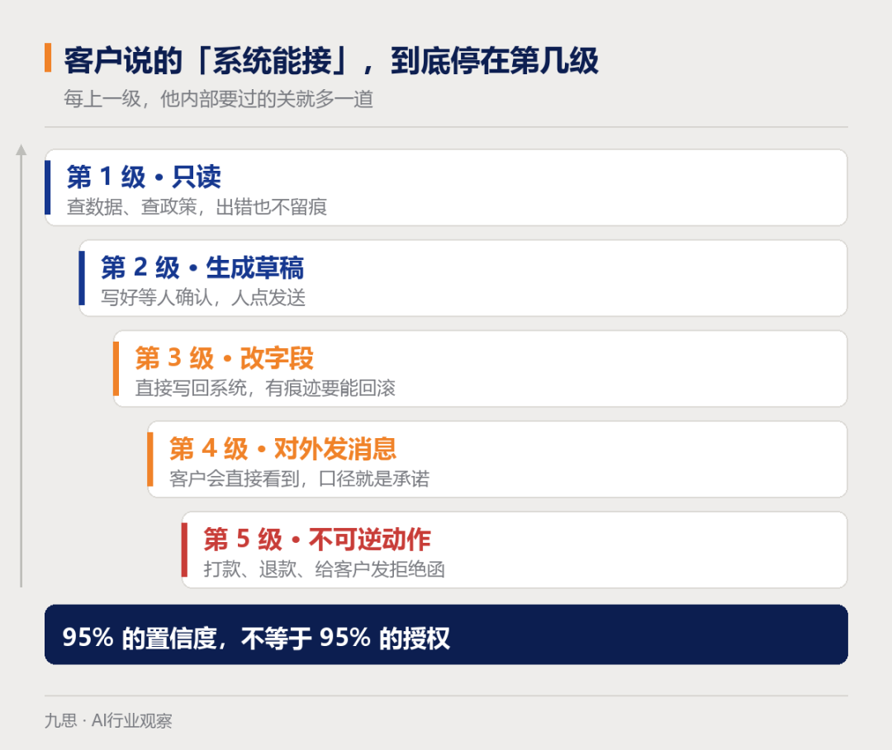
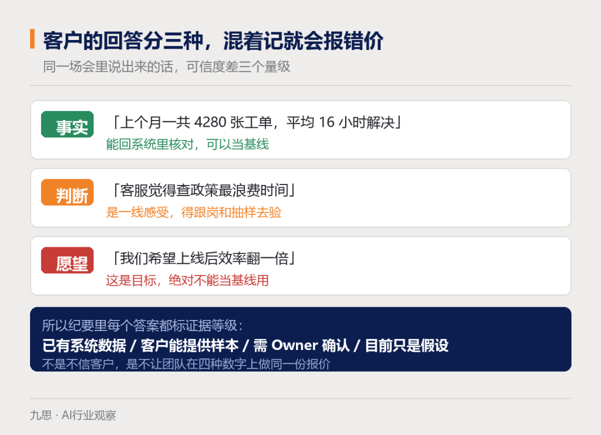

九思D9 专注生产高质量AI内容
01
客户张口那句话，信息量其实是零
AI·NATIVE
这场景太熟了：寒暄两句，茶还没凉，对面就开口了：我们想搞个销售 Agent。
这时候团队里往往立刻有人接话——打算用哪个模型？知识库大概多少份文档？数据能不能出内网？要对接几个系统？
这些问题都得问，但不是现在问。
因为"销售 Agent"这四个字底下，可以塞进去完全不同的五件事：把会议录音整理成纪要；给线索打分排序；到点自动发跟进；根据配置生成报价；甚至从第一次接触一路推到合同签下来。这五件事要的数据、要的权限、扛的风险、烧的钱，差得不是一点。
所以 FDE 第一次见客户，交付物不是一份讲得漂亮的方案，而是一个判断：这个模糊愿望背后，到底有没有一条值得解决的真实工作流。
看一眼 OpenAI 现在挂出来的 FDE 岗位职责就明白了：discovery、technical scoping、system design、build、production rollout，全压在同一个人身上，成功与否看的是生产环境有没有人真在用、工作流指标有没有动、评估反馈是不是闭环。（不是问完需求转手给后面的人，这条线从头背到尾都是你。）
这也直接决定了首访的问法——得从业务结果一路问到未来谁来运行。
下面 20 个问题分五组。别把它当审讯提纲，也不用一次会议全问完。它要撬出来的东西只有五样：价值、流程、依赖、风险、责任。

02
第一组四个问题，先看这活值不值得干
AI·NATIVE
1. 这条流程跑通之后，业务上会变出什么结果？
盯住"结果"这个词，别让客户拿功能来答。"做一个智能客服"不算结果，"标准订单类问题五分钟内给出可靠答复、复杂争议完整升级到人"才算。说得越死，范围和评估集才越好定。
2. 现在这个问题，每天在替公司烧什么？
往下追：人耗多少工时、单子在哪卡着、返工几次、客户投诉几条、收入从哪漏出去、有没有合规风险、丢了哪些机会。要是唯一的答案是"同行都上 AI 了"，这个项目在客户内部就永远排不上优先级！
3. 这件事一天发生几次，还是一季度才一次？
频次一头决定价值有多大，另一头决定你有没有样本可用。一个季度做一次的高层拍板，和一天跑一千次的工单分类，做法上根本是两个物种。
4. 假设三个月后成了，哪三个数字会变？
业务、质量、采用，三类各要一个。比如从收到到闭环的周期、答复正确率、一线实际打开的比例。客户只肯说"体感更聪明一点"，那三个月后你连该不该续都判断不了。
这四问答完，FDE 手里应该能落下一句话：谁、在什么场景、卡在哪个摩擦上、造成什么影响、指望哪个数字变好。 写不出这句，就是还没问清。
03
第二组四个问题，把流程和例外都挖出来
AI·NATIVE
5. 什么信号一响这活就开始了，做到哪一步才算真结束？
一头一尾定的是边界。邮件进来、订单创建、客户挂电话，都可能是起点；生成一段答复通常不算终点，写回系统、或者拿到客户点头，才可能是。
6. 能不能现在就带我走一遍最近做过的真实单子？
别听 SOP，让干活那个人把系统打开，从头演到尾。演的时候你才看得见那些没写进文档的动作：复制粘贴、个人小表格、群里喊一句确认、以及说不清凭什么的经验判断。
（SOP 讲的是这家公司希望自己怎么运转，屏幕上演的才是它实际怎么运转。）

7. 除了顺利那条路，最常见的五种意外长什么样？
项目往往就死在意外里！字段是空的、两条政策打架、客户身份对不上、外部系统超时、金额顶到上限。顺手还能测出另一件事：意外越多，说明第一版范围还得再切小。
8. 哪一步最慢、哪一步老是要重做、哪一步全靠某个人的手感？
慢不等于该交给 AI。得先分清这一步的本质是搬信息、判规则、跟人磨，还是拍板担责。碰到"全靠手感"那步，再补一句：这手感能不能写成标准，还是必须留给人。
OpenAI Academy 讲工作流映射也是这套顺序：先认触发，再认哪些输入可信，然后是当前步骤和私下绕行的路子、交接点、输出物、摩擦点，最后列出哪些还等着被标准化。FDE 的活是把企业实际怎么干活挖出来，不是照着流程图上的方框一个个自动化。
04
第三组四个问题，数据和系统扛不扛得住
AI·NATIVE
9. 干完一次这活，需要哪些信息，它们各自躺在哪？
结构化字段、文档、邮件、聊天记录、外部数据，一样样点名。"有这份数据"和"这份数据能用"是两回事，还得知道什么格式、脏到什么程度、走什么方式取。
10. 同一件事几个地方对不上的时候，以哪份为准，谁负责更新？
价格表、政策口径、产品说明在三个系统里三个版本，这事太常见了！Agent 自己判断不了哪份是真的。而没人认领的知识库，放半年就会失真。
11. 现在牵涉哪些系统，各自能读什么、能写什么？
CRM、ERP、工单、邮箱、数仓，接口、认证、限流、环境全要落实。"系统可以接"这句话要拆成一个梯子：只读、生成草稿、改字段、对外发消息、执行收不回来的动作。（每往上迈一级，客户内部要过的关就多一道。）
12. 能不能给一批脱敏的历史单子，连带正确处理结果？
没有真实样本，基线和评估集都无从谈起。光有输入、没有当时的正确动作也不够，得拉业务专家坐下来一起标。
微软那份 Agent 设计框架把触发、渠道、数据、工具、流程、治理、评估全摆进一张画布，还特意提醒一句：别把本来发生在邮箱和业务系统里的工作，硬设计成一个聊天框。技术选择得跟着人实际待的地方走。
05
第四组四个问题，风险、权限和人的边界
AI·NATIVE
13. 它出一次错，最坏能坏到什么程度？
答错一句话、写错一个字段、付错一笔钱、错拒一个客户，这四种错的性质完全不同。多严重、能不能撤回、波及多大，共同决定这东西能有多大自主权。
14. 哪些数据是碰都不能碰、传都不能传、留都不能留的？
别只问"数据敏不敏感"（客户一定说敏感）。要落到具体字段、哪些人可见、哪个区域、用来干什么、留多久，而且得让安全、隐私、法务的人点过头。
15. 哪些动作必须人来批，签字权在谁手上？
分三档：AI 可以直接做完的、可以做好草稿等人审的、以及必须由人来担的决定。给建议不等于给授权，模型置信度更不能拿来替代组织里的决策权。
16. 信息缺了、政策打架了、置信度低了、请求越界了，该交给谁？
升级不是丢脸的兜底，它本来就是流程的一部分。接手的人是谁、什么条件下停手、要带着哪些上下文过去、多久必须响应，都得写清。千万别让用户从头再讲一遍（讲第二遍他就不来了）。

OpenAI 那份 Agent Activator 材料反复强调四件事：什么信息允许用、什么动作明确禁止、哪些必须人工复核、以及碰到什么情况就停下来问或者往上升。首访不一定当场做完风险评审，但至少要认出来下一轮该把谁请进来。
06
第五组四个问题，采用、Owner和商业决策
AI·NATIVE
17. 业务上谁是 Owner，范围和验收谁说了算？
提需求的人未必是对结果负责的人。真 Owner 得能把用户、数据和业务判断给出来，还得有权把跨部门的堵点推开。
18. 谁每天真的会用它、被它影响，这些人现在在哪个界面上干活？
在 CRM 里？在邮箱里？还是在群里？如果新方案要求他们换入口、多登一次录、手工搬一遍数据，这些成本必须算进账里。（做得再漂亮，人不在那个入口，他就是不会过来。）
19. 上线之后，谁管支持、谁看监控、谁更新知识、出事谁处理？
没有长期 Owner 的 Agent，撑不过人员轮换、政策修订和模型升级。FDE 也不能把"我一直驻场"当成运行方案。
20. 下一步具体做什么，谁在哪天之前交出什么证据？
首访不必逼出报价，但必须逼出下一步：跟岗看流程、抽数据样本、过安全评审、开评估工作会，还是先把范围钉死。每一项都得挂上人名和日期。
07
同一句回答，是事实、是判断还是愿望
AI·NATIVE
一个问题问下去，客户嘴里出来的东西，性质可能差三档。
"上个月一共 4280 张工单，平均解决 16 小时"，这是事实，回系统能核。"客服都觉得查政策最费时间"，这是一线的判断，得跟岗和抽样再验。"我们希望上线后效率翻一倍"，这是愿望，不能直接拿来当项目基线。
会议记录里最好顺手给每条答案标个证据等级：系统里已有数据 / 现场能给样本 / 要找 Owner 确认 / 目前还只是猜。 这不是不信客户，是免得团队后面拿着三种含义不同的数字去做方案、报价格。

追问的方向也要一路往具体收。客户说"流程慢"，你就问最近一次超时具体卡在哪一步。客户说"数据挺多"，你就问一周内能不能给到 50 个脱敏案例。客户说"准确率得 99%"，你就问现在人工是多少、哪一类错比别的错更要命。
一场 60 到 90 分钟的首访，节奏可以这么排：开头 15 分钟对目标和背景，中间 40 分钟顺着一个真实案例走流程，接着 20 分钟落系统、风险和责任，最后 10 分钟当场复述已知、未知和下一步。人来得多的时候，别指望细节全部当场敲定，把需要一线、技术、风控回答的问题拆成后面的专题会。
国内的项目还要额外盯一件事：账面上的流程和实际跑的流程往往不是一条。 审批环节写在系统里，真正的优先级是在群里定的；数据名义上归业务部门，接口权限捏在集团 IT 手上；业务负责人举双手支持，一线正在四五个系统之间来回切。这几件事摸清楚，对判断项目最后落不落得下来，比再敲定一个模型参数管用得多。
08
这20个问题，其实是在验五件事
AI·NATIVE
一，问题是真的，而且值得花钱。二，工作流能被讲清楚、也能被切小。三，数据和系统接得住。四，出错可控、责任有人。五，这个组织有条件用起来、也养得住。
五件事都清楚，可以往技术范围和 PoC 走。价值清楚但流程一团麻，先做流程标准化。数据缺，先安排一次样本审计。风险和签字权还没人露面，那下一步就是开风险专题会。
客户当场卡住，不代表这单没戏。手熟的 FDE 遇到这种情形不会急着给结论。 未知项本身就是发现成果——前提是它被写成一条待验证任务，而不是被一句"应该没问题"糊过去。
09
会后别只发纪要，这五样得一起交
AI·NATIVE
一，一句话的问题陈述加预期结果。二，当前流程、关键例外和痛点地图。三，数据、系统、权限和对应 Owner 的清单。四，AI 和人的初步边界，以及主要风险。五，下一步验证计划、责任人、时间。
还没搞清的事单独拉一张表，而且要分三堆：等客户提供的、等 FDE 自己验的、要安全或法务拍板的。 这样第二次会议才是往前走一步，而不是把第一次重开一遍。
10
第一次见客户，这三件事最好别做
AI·NATIVE
第一，问题还没说清就把产品能力全展一遍。客户会被功能牵着走，真实流程反倒藏起来了。
第二，只跟高层谈愿景。方向是高层定的，例外攥在一线手里，依赖只有系统 Owner 清楚，边界得风险团队划——少一方，图就是残的。
第三，把没经过数据和流程验证的 ROI 说出口。假设可以讲，测量方法可以讲，但别把估算讲成结论。
FDE 的专业感，从来不是现场答得出所有问题，而是清楚哪些问题现在必须有答案、哪些证据还缺、哪些人还得请进来，以及在信息不够的时候，不替客户做没被授权的决定。
会议结束那一刻，最好的结果不是客户来一句"这个 Agent 听着挺厉害"。
而是散会之后各回各家，两边分别跟自己老板汇报，说出来的话居然能对上：动的是哪条流程、图什么、第一版边界画在哪、哪块出事算人的责任、以及靠什么东西决定这事继续还是就此打住。
作者：SereanZ(人类）、CC（AI）
编辑：LLA（人类）
🤖江湖招贤，感兴趣扫码➕v，备注「我愿加入D9AI帮」！